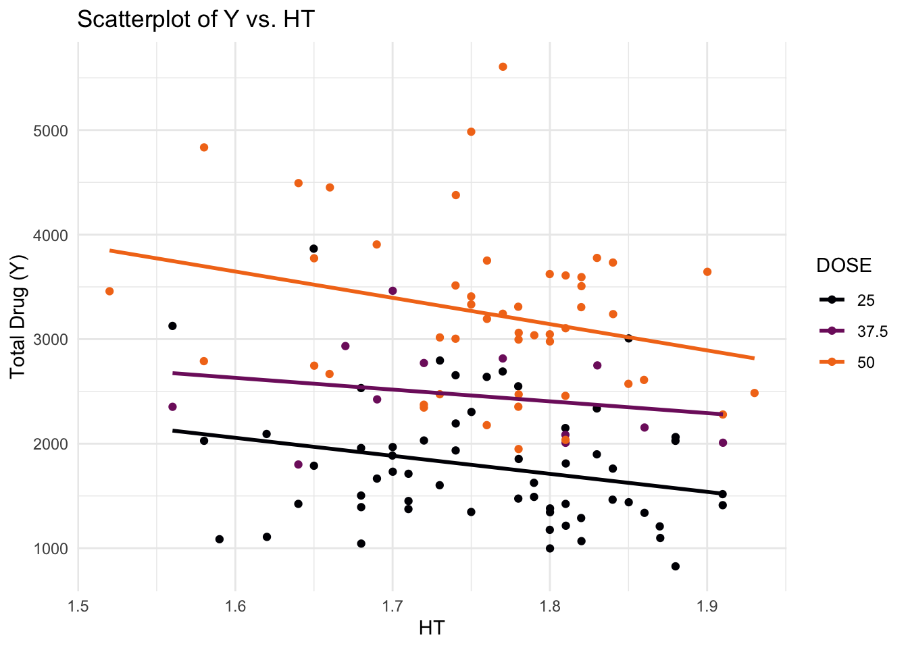
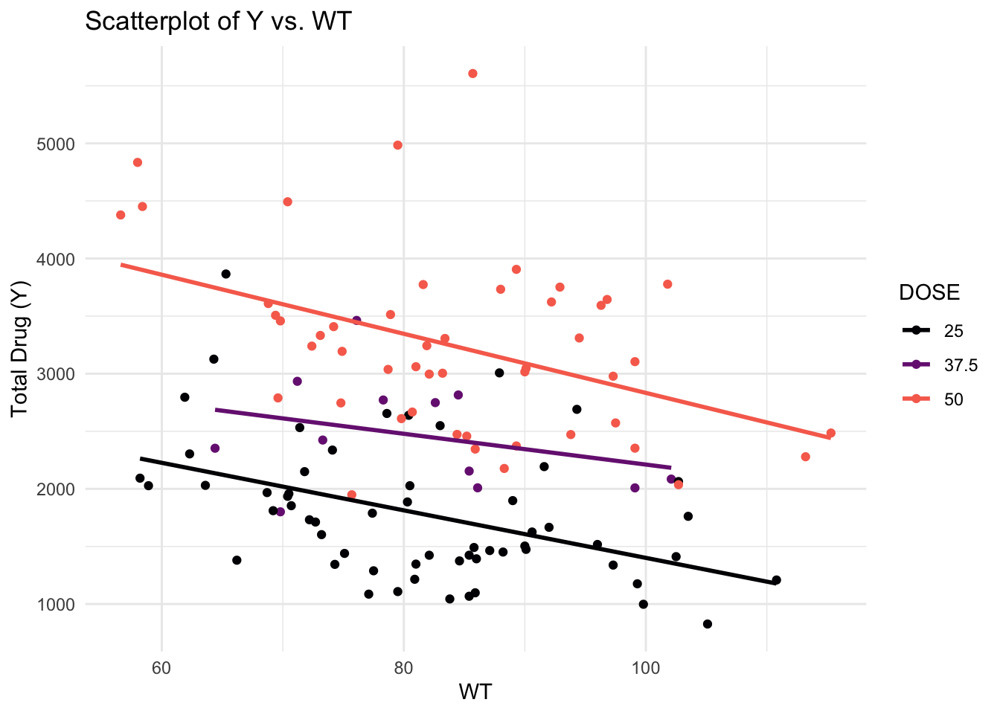

# Installing package of data
library(nlmixr2data)
# Installing additional packages
library(here)here() starts at /Users/mutsa_n/Desktop/MADA-course/mutsanyamuranga-MADA-portfoliolibrary(tidyr)
library(ggplot2)
library(readxl)For this assignment, I will be using data on a drug candidate called Mavoglurant from the paper:
Wendling, T., Dumitras, S., Ogungbenro, K. et al. Application of a Bayesian approach to physiological modelling of mavoglurant population pharmacokinetics. J Pharmacokinet Pharmacodyn 42, 639–657 (2015). https://doi.org/10.1007/s10928-015-9430-4
First we will load the data and additional packages necessary for the assigniment.
# Installing package of data
library(nlmixr2data)
# Installing additional packages
library(here)here() starts at /Users/mutsa_n/Desktop/MADA-course/mutsanyamuranga-MADA-portfoliolibrary(tidyr)
library(ggplot2)
library(readxl)I will also load the data from the another paper which has used this data to ensure a level of consistency and ease of usage with the data.
# Loading Data through CSV
mavodrug <-- read.csv('Mavoglurant_A2121_nmpk.csv')# Change all values in the entire data frame to positive
mavodrug <- abs(mavodrug)
# Check column names
colnames(mavodrug) [1] "ID" "CMT" "EVID" "EVI2" "MDV" "DV" "LNDV" "AMT" "TIME" "DOSE"
[11] "OCC" "RATE" "AGE" "SEX" "RACE" "WT" "HT" # Check data types
str(mavodrug)'data.frame': 2678 obs. of 17 variables:
$ ID : int 793 793 793 793 793 793 793 793 793 793 ...
$ CMT : int 1 2 2 2 2 2 2 2 2 2 ...
$ EVID: int 1 0 0 0 0 0 0 0 0 0 ...
$ EVI2: int 1 0 0 0 0 0 0 0 0 0 ...
$ MDV : int 1 0 0 0 0 0 0 0 0 0 ...
$ DV : num 0 491 605 556 310 237 147 101 72.4 52.6 ...
$ LNDV: num 0 6.2 6.41 6.32 5.74 ...
$ AMT : num 25 0 0 0 0 0 0 0 0 0 ...
$ TIME: num 0 0.2 0.25 0.367 0.533 0.7 1.2 2.2 3.2 4.2 ...
$ DOSE: num 25 25 25 25 25 25 25 25 25 25 ...
$ OCC : int 1 1 1 1 1 1 1 1 1 1 ...
$ RATE: int 75 0 0 0 0 0 0 0 0 0 ...
$ AGE : int 42 42 42 42 42 42 42 42 42 42 ...
$ SEX : int 1 1 1 1 1 1 1 1 1 1 ...
$ RACE: int 2 2 2 2 2 2 2 2 2 2 ...
$ WT : num 94.3 94.3 94.3 94.3 94.3 94.3 94.3 94.3 94.3 94.3 ...
$ HT : num 1.77 1.77 1.77 1.77 1.77 ...This is time-series data of drug concentrations. So for further exploration, we will consider time as the independent variable. To visualilze the data, We will plot the outcome variable (DV) as a function of time, stratified by DOSE and using ID as a grouping factor.
# Plotting Outcome Variable
# Convert DOSE and ID to factors if they are not already
mavodrug$DOSE <- factor(mavodrug$DOSE)
mavodrug$ID <- factor(mavodrug$ID)
# Plotting
ggplot(mavodrug, aes(x = TIME, y = DV, color = DOSE, group = ID)) +
geom_line() +
labs(title = "DV over time stratified by dose and ID",
x = "Time",
y = "DV") +
scale_color_manual(values = c("red", "green", "blue")) +
theme_minimal()
There are some individuals that have received the drug more than once, indicated by having both entries with OCC=1 and OCC=2. To keep things simple, I only keep one dataset for each individual and remove all entries with OCC=2.
# Checking unique values in the 'OCC' column
unique(mavodrug$OCC)[1] 1 2# Filter observations with OCC = 1
mavodrug <- mavodrug[mavodrug$OCC == 1, ]
# Check the structure of the data frame after filtering
str(mavodrug)'data.frame': 1665 obs. of 17 variables:
$ ID : Factor w/ 120 levels "793","794","795",..: 1 1 1 1 1 1 1 1 1 1 ...
$ CMT : int 1 2 2 2 2 2 2 2 2 2 ...
$ EVID: int 1 0 0 0 0 0 0 0 0 0 ...
$ EVI2: int 1 0 0 0 0 0 0 0 0 0 ...
$ MDV : int 1 0 0 0 0 0 0 0 0 0 ...
$ DV : num 0 491 605 556 310 237 147 101 72.4 52.6 ...
$ LNDV: num 0 6.2 6.41 6.32 5.74 ...
$ AMT : num 25 0 0 0 0 0 0 0 0 0 ...
$ TIME: num 0 0.2 0.25 0.367 0.533 0.7 1.2 2.2 3.2 4.2 ...
$ DOSE: Factor w/ 3 levels "25","37.5","50": 1 1 1 1 1 1 1 1 1 1 ...
$ OCC : int 1 1 1 1 1 1 1 1 1 1 ...
$ RATE: int 75 0 0 0 0 0 0 0 0 0 ...
$ AGE : int 42 42 42 42 42 42 42 42 42 42 ...
$ SEX : int 1 1 1 1 1 1 1 1 1 1 ...
$ RACE: int 2 2 2 2 2 2 2 2 2 2 ...
$ WT : num 94.3 94.3 94.3 94.3 94.3 94.3 94.3 94.3 94.3 94.3 ...
$ HT : num 1.77 1.77 1.77 1.77 1.77 ...Here, I will compute the total amount of drug for each individual (for exercise purposes only, not used in normal practices).
library(dplyr)
Attaching package: 'dplyr'The following objects are masked from 'package:stats':
filter, lagThe following objects are masked from 'package:base':
intersect, setdiff, setequal, union# Exclude observations with TIME = 0
mavodrug_filtered <- mavodrug %>%
filter(TIME != 0)
# Compute the sum of the DV variable for each individual
summarized_mavo <- mavodrug_filtered %>%
group_by(ID) %>%
summarize(Y = sum(DV))
# Create a data frame containing only the observations where TIME == 0
time_0_mavo <- mavodrug %>%
filter(TIME == 0)
# Use the appropriate join function to combine the two data frames
combined_mavo <- inner_join(summarized_mavo, time_0_mavo, by = "ID")
# Check the dimensions of the resulting data frame
dim(time_0_mavo)[1] 120 17dim(combined_mavo)[1] 120 18# Convert RACE and SEX to factor variables
combined_mavo <- combined_mavo %>%
mutate(RACE = factor(RACE),
SEX = factor(SEX))
# Select only the specified variables and check the structure
cleaned_mavo <- combined_mavo %>%
select(Y, DOSE, AGE, SEX, RACE, WT, HT)
# Check the structure of the cleaned data
str(cleaned_mavo)tibble [120 × 7] (S3: tbl_df/tbl/data.frame)
$ Y : num [1:120] 2691 2639 2150 1789 3126 ...
$ DOSE: Factor w/ 3 levels "25","37.5","50": 1 1 1 1 1 1 1 1 1 1 ...
$ AGE : int [1:120] 42 24 31 46 41 27 23 20 23 28 ...
$ SEX : Factor w/ 2 levels "1","2": 1 1 1 2 2 1 1 1 1 1 ...
$ RACE: Factor w/ 4 levels "1","2","7","88": 2 2 1 1 2 2 1 4 2 1 ...
$ WT : num [1:120] 94.3 80.4 71.8 77.4 64.3 ...
$ HT : num [1:120] 1.77 1.76 1.81 1.65 1.56 ...The summary tables provide a quick overview of the numerical and categorical variables in the dataset.
# Summary table for numerical variables
summary_table_numeric <- summary(cleaned_mavo[, c("Y", "AGE", "WT", "HT")])
# Summary table for categorical variables
summary_table_categorical <- table(cleaned_mavo$DOSE, cleaned_mavo$SEX)
# Print summary tables
print("Summary table for numerical variables:")[1] "Summary table for numerical variables:"print(summary_table_numeric) Y AGE WT HT
Min. : 826.4 Min. :18.00 Min. : 56.60 Min. :1.520
1st Qu.:1700.5 1st Qu.:26.00 1st Qu.: 73.17 1st Qu.:1.700
Median :2349.1 Median :31.00 Median : 82.10 Median :1.770
Mean :2445.4 Mean :33.00 Mean : 82.55 Mean :1.759
3rd Qu.:3050.2 3rd Qu.:40.25 3rd Qu.: 90.10 3rd Qu.:1.813
Max. :5606.6 Max. :50.00 Max. :115.30 Max. :1.930 print("Summary table for categorical variables:")[1] "Summary table for categorical variables:"print(summary_table_categorical)
1 2
25 49 10
37.5 10 2
50 45 4These plots show the relationship between the total drug (‘Y’) and other predictors such as age, dose, and sex. Scatterplots help visualize the continuous relationship between ‘Y’ and age, while boxplots illustrate the distribution of ‘Y’ across different levels of dose and sex.
# Scatterplot of Y vs. AGE
plot(Y ~ AGE, data = cleaned_mavo, main = "Total Drug vs. Age", xlab = "Age", ylab = "Total Drug")
# Boxplot of Y by DOSE
boxplot(Y ~ DOSE, data = cleaned_mavo, main = "Total Drug by Dose", xlab = "Dose", ylab = "Total Drug")
# Boxplot of Y by SEX
boxplot(Y ~ SEX, data = cleaned_mavo, main = "Total Drug by Sex", xlab = "Sex", ylab = "Total Drug")
These histograms visualize the distributions of variables such as total drug (‘Y’), age, weight (‘WT’), and height (‘HT’). They help identify any potential outliers or unusual patterns in the data.
# Histogram of Y
hist(cleaned_mavo$Y, main = "Distribution of Total Drug", xlab = "Total Drug")
# Histogram of AGE
hist(cleaned_mavo$AGE, main = "Distribution of Age", xlab = "Age")
# Histogram of WT
hist(cleaned_mavo$WT, main = "Distribution of Weight", xlab = "Weight")
# Histogram of HT
hist(cleaned_mavo$HT, main = "Distribution of Height", xlab = "Height")
The pair plot provides a visual overview of the relationships between the variables ‘Y’, age, weight, and height. The correlation matrix quantifies the strength and direction of the linear relationships between these variables. It helps identify potential multicollinearity issues and informs feature selection for modeling purposes.
# Pair plot
pairs(cleaned_mavo[, c("Y", "AGE", "WT", "HT")])
# Correlation matrix
correlation_matrix <- cor(cleaned_mavo[, c("Y", "AGE", "WT", "HT")])
print("Correlation matrix:")[1] "Correlation matrix:"print(correlation_matrix) Y AGE WT HT
Y 1.00000000 0.01256372 -0.2128719 -0.1583297
AGE 0.01256372 1.00000000 0.1196740 -0.3518581
WT -0.21287194 0.11967399 1.0000000 0.5997505
HT -0.15832972 -0.35185806 0.5997505 1.0000000Here, I conduct a model fitting to assess the relationship of the outcome of interest with the other variables. Tidymodels provides the functions necessary for modeling and preprocessing data. The recipe function specifies the data preprocessing steps. In this case, the outcome variable (Y) is defined as the response variable, and all other variables are considered predictors. step_dummy converts categorical predictors into dummy variables, step_center centers numeric predictors around their mean, and step_scale scales numeric predictors to have unit variance.
# Load necessary libraries
library(tidymodels)── Attaching packages ────────────────────────────────────── tidymodels 1.1.1 ──✔ broom 1.0.5 ✔ rsample 1.2.0
✔ dials 1.2.1 ✔ tibble 3.2.1
✔ infer 1.0.6 ✔ tune 1.1.2
✔ modeldata 1.3.0 ✔ workflows 1.1.4
✔ parsnip 1.2.0 ✔ workflowsets 1.0.1
✔ purrr 1.0.2 ✔ yardstick 1.2.0
✔ recipes 1.0.10 ── Conflicts ───────────────────────────────────────── tidymodels_conflicts() ──
✖ purrr::discard() masks scales::discard()
✖ dplyr::filter() masks stats::filter()
✖ dplyr::lag() masks stats::lag()
✖ recipes::step() masks stats::step()
• Use suppressPackageStartupMessages() to eliminate package startup messages# Helper packages
library(readr) # for importing data
Attaching package: 'readr'The following object is masked from 'package:yardstick':
specThe following object is masked from 'package:scales':
col_factorlibrary(broom.mixed) # for converting bayesian models to tidy tibbles
library(dotwhisker) # for visualizing regression results
library(tidymodels)
# Define the recipe
mavo_recipe <- recipe(Y ~ ., data = cleaned_mavo) %>%
step_dummy(all_nominal(), -all_outcomes()) %>%
step_center(all_predictors()) %>%
step_scale(all_predictors())The initial_split function divides the dataset into training and testing sets. The prop argument specifies the proportion of the data to allocate to the training set (80% in this case), and the strata argument ensures that the split is stratified based on the outcome variable (Y), which helps maintain the balance of categories in both sets.
The linear_reg function specifies the linear regression model. set_engine(“lm”) selects the linear model engine (ordinary least squares regression), and set_mode(“regression”) sets the mode of the model to regression, indicating that it predicts a continuous outcome (Y).
The workflow function creates a modeling workflow. This workflow combines the preprocessing steps defined in the recipe with the specified model. The add_recipe function adds the recipe to the workflow, and the add_model function adds the linear regression model.
# Split the data into training and testing sets
set.seed(123) # for reproducibility
mavo_split <- initial_split(cleaned_mavo, prop = 0.8, strata = Y)
mavo_train <- training(mavo_split)
mavo_test <- testing(mavo_split)
# Define the linear regression model specification
linear_spec <- linear_reg() %>%
set_engine("lm") %>%
set_mode("regression")
# Create a workflow that incorporates the recipe and the model
mavo_workflow <- workflow() %>%
add_recipe(mavo_recipe) %>%
add_model(linear_spec)The fit function fits the workflow to the training data. This step applies the preprocessing steps defined in the recipe to the training data and then fits the linear regression model to the preprocessed data.
The predict function generates predictions from the fitted model using the testing data. This step applies the preprocessing steps (from the recipe) to the testing data and then predicts the outcome variable (Y) using the fitted linear regression model.
The metrics function computes evaluation metrics for the model predictions. Here, we calculate the root mean squared error (RMSE) and the R-squared value to assess the model’s performance. The computed metrics are then extracted and stored in the variables all_rmse and all_r_squared, respectively.
# Fit the workflow to the training data
mavo_fit <- fit(mavo_workflow, data = mavo_train)
# Compute predictions on the testing data
mavo_predictions <- predict(mavo_fit, new_data = mavo_test) %>%
bind_cols(mavo_test)The metrics function computes evaluation metrics for the model predictions. Here, we calculate the root mean squared error (RMSE) and the R-squared value to assess the model’s performance. The computed metrics are then extracted and stored in the variables all_rmse and all_r_squared, respectively.
# Compute RMSE and R-squared for the model using all predictors
all_metrics <- mavo_predictions %>%
metrics(truth = Y, estimate = .pred)
all_rmse <- all_metrics %>%
filter(.metric == "rmse") %>%
pull(.estimate)
all_r_squared <- all_metrics %>%
filter(.metric == "rsq") %>%
pull(.estimate)Finally, we print the computed RMSE and R-squared values to evaluate the model’s performance. These metrics provide insights into how well the linear regression model fits the data and predicts the outcome variable.
# Print RMSE and R-squared for the model using all predictors
cat("Model using all predictors:\n")Model using all predictors:cat("RMSE:", all_rmse, "\n")RMSE: 672.5877 cat("R-squared:", all_r_squared, "\n")R-squared: 0.4702903 print(mavo_predictions)# A tibble: 24 × 8
.pred Y DOSE AGE SEX RACE WT HT
<dbl> <dbl> <fct> <int> <fct> <fct> <dbl> <dbl>
1 2142. 3126. 25 41 2 2 64.3 1.56
2 2000. 2337. 25 27 1 2 74.1 1.83
3 1231. 1762. 25 28 1 1 104. 1.84
4 2600. 2772. 37.5 28 1 1 78.3 1.72
5 3379. 3004. 50 28 1 1 83.2 1.74
6 3543. 3514. 50 32 1 2 78.9 1.74
7 2847. 3644. 50 28 1 2 96.8 1.90
8 1721. 1108. 25 48 2 2 79.5 1.62
9 1695. 2027. 25 20 1 1 80.5 1.88
10 1297. 2063. 25 40 1 2 103. 1.88
# ℹ 14 more rowsprint(mavo_fit)══ Workflow [trained] ══════════════════════════════════════════════════════════
Preprocessor: Recipe
Model: linear_reg()
── Preprocessor ────────────────────────────────────────────────────────────────
3 Recipe Steps
• step_dummy()
• step_center()
• step_scale()
── Model ───────────────────────────────────────────────────────────────────────
Call:
stats::lm(formula = ..y ~ ., data = data)
Coefficients:
(Intercept) AGE WT HT DOSE_X37.5 DOSE_X50
2459.86 52.83 -313.73 -122.15 183.78 742.10
SEX_X2 RACE_X2 RACE_X7 RACE_X88
-202.23 15.44 -74.16 -69.12 The RMSE is approximately 672.59. Lower values of RMSE indicate better model performance, as they imply smaller errors between predicted and actual values. The R-squared value is approximately 0.47, suggesting that the model explains about 47% of the variance in the outcome variable. The intercept term is 2459.86, representing the predicted value of Y when all predictors are set to zero. The coefficient for AGE is 52.83, indicating that for each one-unit increase in age, the predicted value of Y increases by 52.83 units. Finally, coefficients for other predictors (WT, HT, DOSE, SEX, RACE) represent the change in the predicted value of Y associated with a one-unit change in each respective predictor.